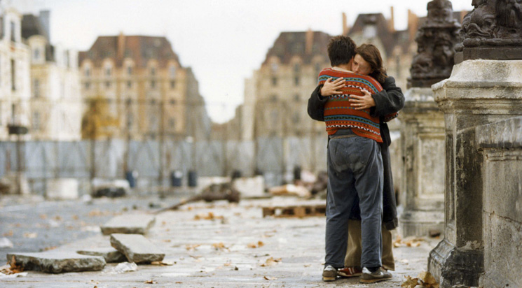

Les Amants du Pont-Neuf
Informazioni sul film
Regia: Léos Carax
Attori: Juliette Binoche (Michèle Stalens), Denis Lavant (Alex), Klaus-Michael Grüber (Hans), Daniel Buain (Amico di Alex), Marion Stalens (Marion), Chrichan Larson (Julien)
Genere: Drammatico, Romantico
Anno: 1991
Durata: 2h 6m
Trama del film
Alex, un vagabondo che vive facendo il mangiafuoco per le strade di Parigi ed abita in una nicchia del Pont Neuf, si innamora di Marianne, una ragazza di buona famiglia che ha scelto di fare la pittrice ma rischia di perdere la vista.
Critica
- «Carax è l'alfiere del nuovo cinema visionario francese. Dopo Rosso sangue torna e gira il suo capolavoro».
- «Ambizioso e magniloquente tentativo di raccontare l'angoscia senza cause né soluzioni di questi tempi postmoderni. Unico momento di vera commozione, la visita notturna al Louvre».
- «Un surrealismo forsennato s'alterna con l'esibizionismo gratuito».
Riconoscimenti
- 1993 – BAFTA Award
- Nomination Miglior film straniero (Francia)
- 1992 – Premio César
- Nomination Miglior attrice a Juliette Binoche
- Nomination Miglior scenografia a Michel Vandestien
- 1992 – European Film Awards
- Miglior attrice a Juliette Binoche
- Miglior fotografia a Jean-Yves Escoffier
- Miglior montaggio a Nelly Quettier
- Nomination Miglior film
- Nomination Miglior attore a Denis Lavant